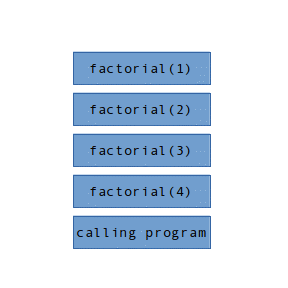
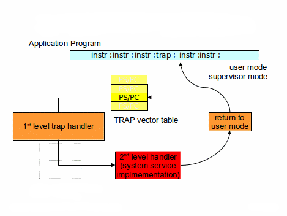
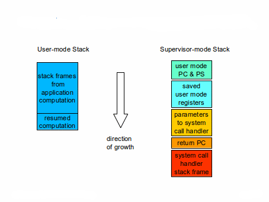

Stack Frames and Linkage Conventions
Introduction
Two fundamental questions that quickly arise in the implementation of an operationg system
are:
- what constitutes the state of a computation, and how can that state be
saved and restored?
- what are the mechanisms by which one software component can request
services, and receive results from another?
We can begin the exploration of these questions by examining subroutine linkage
conventions.
Most students will have already been exposed to this in previous courses (e.g.
computer architecture, programming languages, compiler construction);
This brief review is intended to refresh your understanding of the basic
concepts so that we can build upon them.
The Stack Model of Programming Languages
Most modern programming languages support procedure-local variables:
- They are automatically allocated whenever the procedure (or block) is entered.
- They are only visible to code within that procedure (or block).
They cannot be seen or accessed by code in calling or called procedures.
- Each distinct (e.g. recursive or parallel) invocation of the procedure (or block) has
its own distinct set of local variables.
- They are automatically deallocated when the procedure (or block) exits/returns.
These local variables, as well as parameters and intermediate computational results are most
commonly stored in a Last-In-First-Out stack: with new call frames being pushed onto the
stack whenever a procedure is called (or a block entered) and old frames being popped off
the stack whenever a procedure returns (or a block is exited).
Consider the recursive factorial implementation:
int factorial( int value ) {
if (value <= 1)
return(value);
else
return(value * factorial(value - 1));
}
If I call factorial(4), just before the final invocation
of factorial returns, there would be four instances of
factorial on the stack, in addition to the call frames
for the code that called factorial in the first place.

The stack model for
procedure calls is so universal that most processor architectures provide hardware
instructions for stack management, and depend on the presence of a stack to make
subroutine calls or handle exceptions.
It should be remembered, however, that the stack model does not work for all
memory allocation needs. Many data items must last longer than the procedure that
created them. For example, when read a document into memory, I do not expect
that document to disappear as soon as the read function returns.
Long lived resources should not be allocated on the stack, but rather from the
heap (which we will discuss in a few weeks).
Subroutine Linkage Conventions
The details of subroutine linkage conventions are highly Instruction Set Architecture
specific, and in some cases language-specific.
The following examples will be based on the Intel x86 architecture.
The instructions and registers will be very different for other ISAs,
but the basic concepts will remain valid.
The basic elements of subroutine linkage are:
- parameter passing ... marshaling the information that will be passed
as parameters to the called routine.
- subroutine call ... save the return address (in the calling routine)
on the stack, and transfer control to the entry point (of the called routine).
- register saving ... saving the contents of registers that the linkage
conventions delclare to be non-volatile, so that they can
be restored when the called routine returne.
- allocating space for the local variables (and perhaps computationsl
temporaries) in the called routine.
When the called routine completes, the process of returning is fairly symmetric:
- return value ... placing the return value in the place where the calling routine
expects to find it.
- popping the local storage (for the called routine) off the stack.
- register restoring ... restore the non-volatile registers to the values they had
when the called routine was entered.
- subroutine return ... transfer control to the return address that the
calling routine saved at the beginning of the call.
The corresponding x86 code (for the above factorial example illustrates
the register conventions and respective responsibilities of the caller and callee.
The code in green is executed by callees.
The code in red is executed by callers.
_factorial:
pushl %ebp // save previous frame pointer
movl %esp, %ebp // top of stack becomes new frame pointer
pushl %ebx // save non-volatile EBX register
movl 8(%ebp), %ebx // copy parameter off stack into EBX
movl $1, %eax // get a constant 1
cmpl $1, %ebx // compare value with 1
jle L2 // if less than or equal ...
leal -1(%ebx), %eax // EAX = EBX - 1
subl $12, %esp // extend stack for recursive call
pushl %eax // push parameter onto stack
call _factorial // call factorial
addl $12, %esp // clean off the call frame
imull %ebx, %eax // multiply value by return value
L2: // return value is in eax
movl -4(%ebp), %ebx // restore saved EBX register
movl %ebp, %esp // restore top of stack
popl %ebp // restore saved frame pointer
ret // return to caller
X86 Register Conventions:
- %esp is the hardware-defined stack pointer.
- the X86 stack grows downwards. A push operation causes
the top of stack to be the next lower address. A Pop operation
causes the top of stack to be the next higher address.
- %ebp is typically used as a frame pointer ... it points at the
start of the current stack frame (where the top of stack was
at the time of entry).
- %eax is a volatile register that is expected to contain the
return value when the called routine returns.
- parameters are pushed onto the stack immediately before
the caller's return address.
- the call instruction pushes the address of the
next instruction onto the stack, and then transfers
control to the next location.
- the ret instruction pops the return address off of the
top of the stack and transfers back to that location.
While these details can be ISA specific, we also observe that:
- Register saving is the responsibility of the called routine.
This is often done, because only the called routine knows
which registers it will use (and therefore which it needs
to save and restore.
- Cleaning parameters off of the stack is the responsibility
of the calling routines. This is often done, because only
the calling routine knows how many parameters is actually
passed.
- The clear deliniation of responsibilities between the
caller and callee make it possible to have proceedures
written in one language (e.g. C) called by programs
written in another language (e.g. FORTRAN).
There is little point in memorizing the detailed linkage conventions
of an obsolete Instruction Set Architecture.
There is still, however, value in understanding each step of the above process,
because the same basic steps (some, perhaps automated by hardware)
can be seen in almost all linkage conventions. After you have
understood one set of linkage conventions, you should have little
trouble understanding outhers.
It is also interesting to note how relatively simple it is to
save and restore the state of a procedure; It is merely a stack
frame and a few registers ... most of whose values are stored in
the next stack frame.
Traps and Interrupts
Most Instruction Set Architectures include support for interrupts
(to inform the software than an external event has happened) and
traps (to inform the software of an execution fault). These are
similar to procedure calls in that:
- we want to transfer control to an interrupt or trap handler.
- we need to save the state of the running computation before doing so.
- after the event has been handled, we want to restore the saved state
and resume the interrupted computation.
The key differences between a procedure call and an interrupt/trap are:
- a procedure call is requested by the running software, and the
calling software expects that, upon return, some function will
have been performed, and an approprate value returned.
- because a procedure call is initiated by software, all
of the linkage conventions are under software control.
Because interrupts and traps are initiated by the hardware,
the linkage conventions are strictly defined by the hardware.
- the running software was not expecting a trap or interrupt,
and after the event is handled, the computer state should
be restored as if the trap/interrupt had never happened.
A typical interrupt or trap mechanism works as follows:
- there is a number (0, 1, 2 ...) associated with every possible
external interrupt or execution exception.
- there is a table, initialized by the OS software, that associates
a Program Counter and Processor Status word (PC/PS pair) with
each possible external interrupt or execution exception.
- when an event happens that would trigger an interrupt or trap:
- the CPU uses the associated interrupt/trap number to index
into the appropriate interrupt/trap vector table.
- the CPU loads a new program counter and processor status word
from the appropriate interrupt/trap vector.
- the CPU pushes the program counter and processor status word
associated with the interrupted computation onto
the CPU stack (associated with the new processor status word).
- execution continues at the address specified by the new
program counter.
- the selected code (usually written in assembler, and called a first level handler:
- saves all of the general registers on the stack
- gathers information from the hardware on the cause of the interrupt/trap
- chooses the appropriate second level handler
- makes a normal procedure call to the second level handler,
which actually deals with the interrupt or exception.
- after the second level handler has dealt with the event, it returns
to the first level handler, after which ...
- the 1st level handler restores all of the saved registers (from the interrupted computation).
- the 1st level handler executes a privileged return from interrupt or return from trap
instruction.
- the CPU re-loads the program counter and processor status word from the
values saved at the time of interrupt/trap.
- execution resumes at the point of interruption.

Flow-of-control associated with a (system call) trap

Stacking and un-stacking of a (system call) trap
This interrupt/trap mechanism:
- does a more complete job of saving and restoring the state of the interrupted computation.
- translates the (much simpler) hardware-driven call to the 1st level handler into a normal
higher-level-language procedure call to the chosen 2nd level hander.
The similarities might make it seem that an interrupt/trap is only a little bit more expensive than
a procedure call (more registers to save, plus the added computation to decide what 2nd level handler
to call. But this ignores the fact that an interrupt/trap causes a new processor status word to
be loaded into the CPU ... which will probably move us to a new (likely more privileged) processor mode,
running in a new (unrelated to the interrupted program) address space, and almost surely
involve a complete loss of the CPU caches. And the same things will happen again upon return.
Consequently, taking an interrupt or trap is likely to be somewhere between 100x and 1000x as
expensive as making a procedure call.
Summary
Procedure and trap/interrupt linkage instructions provide us with:
- a preliminary low level definition of the state of a computation and
what it means to save and restore that state.
- an introduction to the basic CPU-supported mechanisms for synchronous and
and asynchronous transfers of control.
- an initial example of how it might be possible to interrupt an on-going
computation, do other things, and then return to the interrupted computation
as if it had never been interrupted.
In the following chapters we will build on these foundations to implement
processes and system calls.